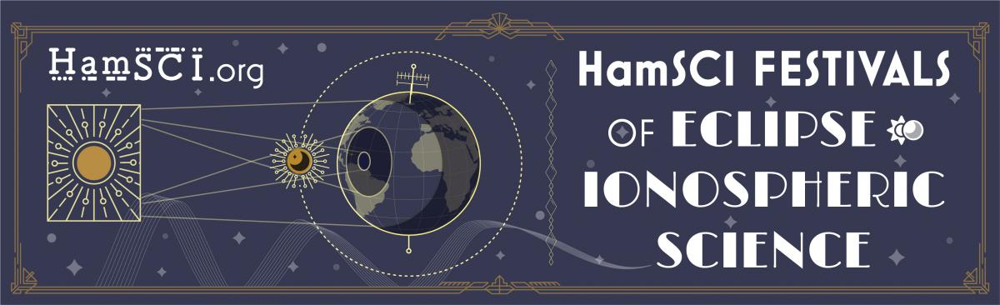

HamSCI Festivals of Eclipse Ionospheric Science
Back to StoriesStory 748
Sat, 2023-09-09 18:36 — VE7FSR

The HamSCI Festivals of Eclipse Ionospheric Science will occur October 14, 2023 and April 8, 2024 during spectacular North American solar eclipses. The Festivals will consist of multiple events, each with a goal of increasing our understanding of sun-ionosphere-earth relationships. Participants will include volunteer amateur radio operators , short wave listeners and science researchers from multiple US universities.
HamSCI FoEIS Contests (Non-WARC Bands, 6-160 meters) The Solar Eclipse QSO Party (SEQP) using CW, FT4/8, SSB and other digital modes The Gladstone Signal Spotting Challenge (GSSC) using CW, WSPR and FST4W modes The HamSCI FoEIS Contest Info Page has all of the details HamSCI FoEIS Research Events (40, 75 and 160 meters) TDOA (Time Delay of Arrival) Event - The Use of Time Delay of Arrival (TDOA) Measurements to Profile Ionospheric Layer Height Changes During Solar Eclipses For more information please see: https://hamsci.org/eclipse or https://swling.com/blog/2023/08/how-dxers-can-contribute-to-ionospheric-research-during-the-october-14-2023-solar-eclipse/